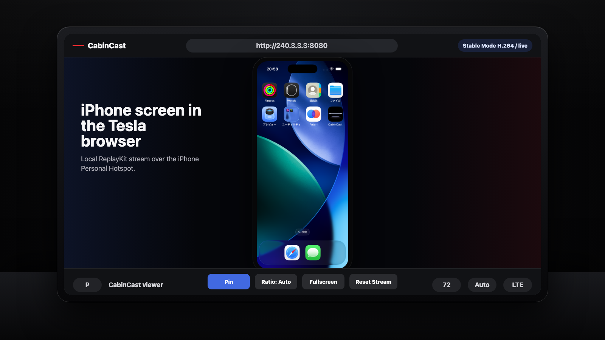

CabinCast を開始
iPhone で CabinCast を開き、キャスト開始をタップして iOS のブロードキャスト確認を許可します。
CabinCast は iPhone 上でローカルの iOS ReplayKit ブロードキャストを開始し、 パーソナルホットスポット経由で Tesla ブラウザから開けるビューアページを配信します。
http://240.3.3.3:8080


Tesla を iPhone のパーソナルホットスポットに接続してから、
ブラウザでローカルのビューアアドレスを開きます。HTTPS ではなく http:// を使います。
iPhone で CabinCast を開き、キャスト開始をタップして iOS のブロードキャスト確認を許可します。
Tesla の Wi-Fi から iPhone のパーソナルホットスポットに接続し、同じローカル経路にします。
Tesla ブラウザで http://240.3.3.3:8080 を入力し、必要に応じて Reset Stream を使います。
Stable Mode と Quality Mode は、基本の 720p/30 ミラーリング経路を提供します。 無料モードでは、最も安定して開始するために停車中にミラーリングを開始してください。
PRO Codec は、より高品質なオプションとエキスパート向けの調整を使える新しい経路です。 継続的な開発を支援したい方向けに用意されています。
CabinCast は表示専用です。iPhone の画面をブラウザに表示できますが、 車両画面から iPhone アプリを操作することはできません。音声は通常どおり Bluetooth または iPhone から再生します。
iPhone が熱くなった場合は、品質を下げるか Stable Mode に戻してから再度テストしてください。
明示的なポート付きの HTTP と、ローカルホットスポット経路を使います。HTTPS はビューア経路ではありません。
DRM 保護された動画は、iOS の画面収録制限により黒く表示される場合があります。
ホットスポット、URL、モード、フルスクリーン、発熱のチェックリストを確認してください。